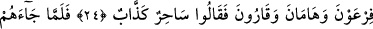

YERYÜZÜNDE GEZİP
DOLAŞMADILAR MI?
21. Onlar, yeryüzünde gezip dolaşmadılar mı ki, kendilerinden öncekilerin
âkıbetinin nasıl olduğunu görsünler! Onlar, kuvvet ve yeryüzündeki eserleri
yönünden bunlardan daha da üstündüler. Böyleyken Allah onları günahları
yüzünden yakaladı. Onları Allah’ın gazabından koruyan da olmadı.
22. Bunun sebebi, peygamberleri kendilerine apaçık mûcizeler getirdikleri halde,
inkâr etmeleri idi. Allah da kendilerini tutup yakalayıverdi. Doğrusu O, kuvvetlidir;
azabı da pek çetindir.
23. Andolsun ki biz Mûsâ’yı mûcizelerimiz ve apaçık hüccetle gönderdik.
24. Firavun, Hâmân ve Karun’a. Onlar: Bu, çok yalancı bir sihirbazdır! dediler.
25. İşte o (Mûsâ), tarafımızdan kendilerine hakkı getirince: Onunla beraber îman
edenlerin oğullarını öldürün, kadınları sağ bırakın! dediler. Ama kâfirlerin tuzağı
elbette boşa çıkar.
26. Firavun: Bırakın beni, dedi. Mûsâ’yı öldüreyim; (Kurtarabilirse) Rabbine
yalvarsın! Çünkü ben onun, dininizi değiştireceğinden, yahut yeryüzünde fesat
çıkaracağından korkuyorum.
27. Mûsâ da: Ben, hesap gününe inanmayan her kibirliden, benim de Rabbim,
sizin de Rabbinize sığındım, dedi.